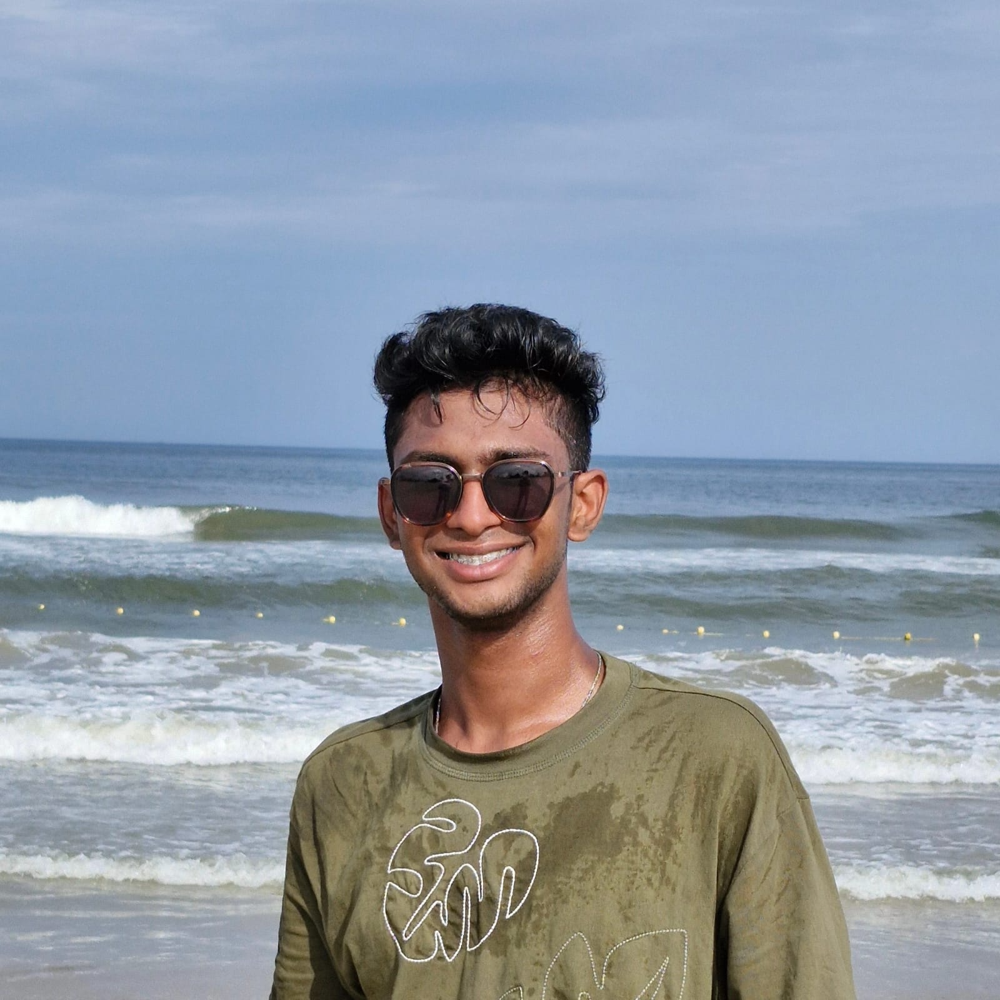

Yashwanth Apuru

Summary
Motivated and dedicated B.Tech Data Science student with a strong interest in technology and programming. Currently learning web development and fundamental computer science concepts. Eager to develop technical skills and gain practical experience through academic projects and continuous learning.
Education
- Bachelor of Technology (B.Tech) in Data Science
Gokaraju Rangaraju Institute of Engineering and Technology (GRIET), Hyderabad
2024 – Present
Currently pursuing second year
Work Experience
Fresher – Currently seeking opportunities to gain practical experience and develop professional skills.
Skills
- Basic knowledge of HTML and Web Development
- Strong foundation in Programming Fundamentals
- Problem Solving and Analytical Thinking
- Proficient in using Visual Studio Code (VS Code)
- Good Communication and Teamwork skills
- Familiar with Microsoft Office tools (Word and PowerPoint)
- Quick learner with a strong willingness to adapt to new technologies
Awards and Archievements
- Awarded Gold Medal in Chemistry Aptitude Test (Olympiad) during Class 8, recognizing outstanding academic performance in science.
Other
My Hobbies
Contact Me